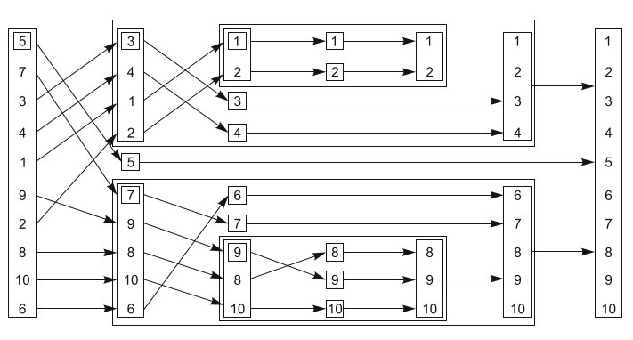

4.4 简化代码
同步工具在本章称为构建块。你可以关注下同步的操作，而非具体机制。当程序需要并发时，可提供更多的函数化方式简化代码。比起在多个线程间共享数据，每个任务最好拥有自己的数据，并且其他线程可以使用future获取运行结果。
4.4.1 使用future的函数化编程
函数化编程(functional programming)是一种编程方式，函数结果只依赖于传入函数的参数。使用相同的参数调用函数，不管多少次都会获得相同的结果。C++标准库中与数学相关的函数都有这个特性，例如：sin，cos和sqrt。基本类型间的简单运算，例如：3+3，6*9，或1.3/4.7。纯粹的函数不会改变任何外部状态，并且这种特性限制了函数的返回值。
第3章我们讨论过，不修改共享数据，就不存在条件竞争，并且没有必要使用互斥量保护共享数据。这是对编程极大的简化，例如Haskell语言[2]中所有函数默认都是“纯粹的”。
函数化编程的好处并不限于将“纯粹”作为默认方式(范型)的语言。C++是一个多范型的语言，也可以写出FP类型的程序。C++11的方式要比C++98简单许多，因为C++11支持Lambda表达式(详见附录A，A.6节)，还加入了Boost和TR1中的std::bind，以及自动可以自行推断类型的自动变量(详见附录A，A.7节)。future作为最后一块拼图，使得函数化编程模式并发化(FP-style concurrency)在C++中成为可能。future可以在线程间互相传递，并允许计算结果互相依赖。
快速排序——FP模式版
为了展示在函数化(PF)并发中如何使用future，让我们来看看一个简单的实现——快速排序算法。该算法的基本思想很简单：给定一个数据列表，然后选取其中一个数为“中间”值，之后将列表中的其他数值分成两组——一组比中间值大，另一组比中间值小。之后对小于“中间”值的组进行排序，并返回排序好的列表，再返回“中间”值，再对比“中间”值大的组进行排序，并返回排序的列表。图4.2中展示了10个整数在这种方式下进行排序的过程。

图4.2 FP-模式的递归排序
下面代码中的是FP-模式的串行实现，需要传入列表，并且返回一个列表，与std::sort()做同样的事情不同。
(译者：std::sort()是无返回值的，因为参数接收的是迭代器，所以其可以对原始列表直进行修改与排序。可参考sort())
代码4.12 快速排序——串行版
template<typename T>
std::list<T> sequential_quick_sort(std::list<T> input)
{
if(input.empty())
{
return input;
}
std::list<T> result;
result.splice(result.begin(),input,input.begin()); // 1
T const& pivot=*result.begin(); // 2
auto divide_point=std::partition(input.begin(),input.end(),
[&](T const& t){return t<pivot;}); // 3
std::list<T> lower_part;
lower_part.splice(lower_part.end(),input,input.begin(),
divide_point); // 4
auto new_lower(
sequential_quick_sort(std::move(lower_part))); // 5
auto new_higher(
sequential_quick_sort(std::move(input))); // 6
result.splice(result.end(),new_higher); // 7
result.splice(result.begin(),new_lower); // 8
return result;
}
虽然接口是FP的，但需要做大量的拷贝操作，所以内部会使用命令模式。选择第一个数为“中间”值，使用splice()①将输入的首个元素(中间值)放入结果列表中，这种方式产生的结果可能不是最优的。因为链表的访问方式是遍历，所以对std::list做任何事都需要花费较长的时间。我们清楚想要什么样的结果，可以将“中间”值进行拼接，还需要使用“中间”值进行比较，所以使用了引用②，避免过多的拷贝。之后，可以使用std::partition将序列中的值分成小于“中间”值的组和大于“中间”值的组③，最简单的方法就是使用Lambda函数指定区分的标准(详见附录A，A.5节，更多有关Lambda函数的信息)。
std::partition()会对列表进行重置，并返回指向首元素(不小于“中间”值)的迭代器。迭代器的类型全称可能会很长，可以使用auto让编译器帮忙定义迭代器类型的变量(详见附录A，A.7节)。
现在，选择了FP模式的接口，要使用递归对两部分排序，所以需要创建两个列表。可以用splice()来完成，将input列表小于divided_point的值移动到新列表lower_part④中，其他数继续留在input列表中。而后，可以递归调用⑤⑥，对两个列表进行排序。显式使用std::move()将列表传递到函数中后，可以再次使用splice()，将result中的结果以正确的顺序进行拼接。new_higher指向的值放在“中间”值的后面⑦，new_lower指向的值放在“中间”值的前面⑧。
快速排序——FP模式线程强化版
使用纯函数模式容易转化为并行版本。
代码4.13 快速排序——并行版
template<typename T>
std::list<T> parallel_quick_sort(std::list<T> input)
{
if(input.empty())
{
return input;
}
std::list<T> result;
result.splice(result.begin(),input,input.begin());
T const& pivot=*result.begin();
auto divide_point=std::partition(input.begin(),input.end(),
[&](T const& t){return t<pivot;});
std::list<T> lower_part;
lower_part.splice(lower_part.end(),input,input.begin(),
divide_point);
std::future<std::list<T> > new_lower( // 1
std::async(¶llel_quick_sort<T>,std::move(lower_part)));
auto new_higher(
parallel_quick_sort(std::move(input))); // 2
result.splice(result.end(),new_higher); // 3
result.splice(result.begin(),new_lower.get()); // 4
return result;
}
当前线程不对小于“中间”值部分的列表进行排序，std::async()①会使用另一线程对列表进行排序。大于部分如同之前一样，使用递归进行排序②。通过递归调用parallel_quick_sort()，可以使用硬件并发。std::async()会启动一个新线程，这样当递归三次时，就会有八个线程在运行了。当递归十次(对于大约有1000个元素的列表)，如果硬件能处理这十次递归调用，将会创建1024个执行线程。当运行库认为产生了太多的任务时(也许是因为数量超过了硬件并发的最大值)，可能会同步的切换新产生的任务。当任务过多时(已影响性能)，为了避免任务传递的开销，这些任务应该在使用get()获取结果的线程上运行，而不是在新线程上运行。这也符合std::async的行为，为每一个任务启动一个线程(甚至是在任务超额时，也就是在std::launch::deferred没有明确规定的情况下)，或为了同步执行所有任务(std::launch::async有明确规定的情况下)。当运行库自动裁剪线程时，建议去查看一下运行库的实现文档，了解一下将会有怎样的行为表现。
比起使用std::async()，可以写一个spawn_task()函数对std::packaged_task和std::thread做一下包装。如代码4.14中所示，需要为函数结果创建一个std::packaged_task对象， 并从这个对象中获取future，或在线程中返回future。其本身并没有太多优势(事实上会造成大规模的超额任务)，但可为转型成一个更复杂的实现进行铺垫，实现会向队列添加任务，而后使用线程池的方式来运行。std::async更适合于已知所有任务的情况，并且要能完全控制线程池中构建或执行过任务的线程。
代码4.14 spawn_task的简单实现
template<typename F,typename A>
std::future<std::result_of<F(A&&)>::type>
spawn_task(F&& f,A&& a)
{
typedef std::result_of<F(A&&)>::type result_type;
std::packaged_task<result_type(A&&)>
task(std::move(f)));
std::future<result_type> res(task.get_future());
std::thread t(std::move(task),std::move(a));
t.detach();
return res;
}
其他先不管，回到parallel_quick_sort函数。因为直接递归去获取new_higher列表，就可以如之前一样对new_higher进行拼接③。new_lower列表是std::future<std::list<T>>类型，而非是一个简单的列表，所以需要调用get()成员函数在调用splice()④之前去检索数值。之后，等待后台任务完成，并且将结果移入splice()中。get()返回一个包含结果的右值引用，这样的结果就是可以移动的(详见附录A，A.1.1节，有更多有关右值引用和移动语义的信息)。
假设使用std::async()是硬件并发最好的选择，但这样的并行实现对于快速排序来说，依然不理想。std::partition已经足够好了，但依旧是串行调用。如果对实现最快并行感兴趣的话，可以去查阅一些学术文献，或者可以选择C++17中的并行重载版本(详见第10章)。
函数化编程可算作是并发编程的范型，并且也是通讯顺序进程(CSP，Communicating Sequential Processer[3])的范型，这里的线程没有共享数据，但有通讯通道允许信息在不同线程间进行传递。这种范型被Erlang语言所采纳，并且常用在MPI(Message Passing Interface，消息传递接口)上做高性能运算。现在不会再对它们而感到惊奇了吧，C++就能支持它们。
接下来的一节中，我们会讨论实现这种操作的方式。
4.4.2 使用消息传递的同步操作
CSP的概念很简单：没有共享数据时，每个线程可以基于所接收到的信息独立运行。每个线程就都有状态机：当收到一条信息，会以某种方式更新状态，并且可能向其他线程发出信息(消息处理机制依赖于线程的初始化状态)。这是有限状态机模式的实现，并且状态机可以隐式实现，这种方式更加依赖于明确的行为要求和专业的编程团队。无论选用哪种方式去实现线程，任务都会进行独立处理，消除潜在的混乱(数据共享并发)，就让编程变的更加简单。
通讯处理没有共享数据，所有消息都是通过消息队列传递，而C++线程共享一块地址空间，所以达不到真正通讯处理要求。这就需要一些约定来支持：作为应用或是库作者有责任确保在实现中不存在共享数据。当然，为了线程间的通信，消息队列必须共享，具体的细节要包含在库中。
试想有一天要为实现ATM(自动取款机)写一个应用。这个应用需要处理：取钱时和银行之间的交互情况，以及控制器械接受用户的卡片，显示适当的信息，处理按钮事件，吐出现金，还有退还卡。
一种处理方法是让代码将所有事情分配到三个独立线程上去：一个线程去处理物理机械，一个去处理ATM机的逻辑，还有一个用来与银行通讯，这些线程不共享任何数据，比如：当有人在ATM机上插入了卡片或者按下按钮，处理机械的线程将会发送一条信息到逻辑线程上，并且逻辑线程将发送一条消息到机械线程，告诉机械线程可以分配多少钱等等。
ATM机逻辑建模的方式，就可以将其当状态机。线程的每一个状态都会等待一条可接受的信息，这条信息包含需要处理的内容。图4.3中将展示有状态参与的一个简单是实现。这个简化实现中，系统在等待一张卡插入。当有卡插入时，系统将会等待用户输入PIN(类似身份码的东西)，并且用户可以将最后输入的数字删除。当数字输入完成，需要验证PIN。当验证有问题时，就需要退出卡，并且继续等待其他人将卡插入到机器中。当验证通过时，要等待用户取消交易或选择取款。当用户选择取消交易，程序可以结束，并返还卡片。当用户选择取出一定量的现金，程序就要在吐出现金和返还卡片前等待银行方面的确认，或显示“余额不足”的信息，并返还卡片。很明显，一个真正的ATM机要考虑的东西更多、更复杂。

图4.3 一台ATM机的状态机模型(简化)
我们已经为ATM机的逻辑设计了状态机，可以使用一个类进行实现，类中有成员函数可以获取每一个状态。每一个成员函数可以等待从指定集合中传入的信息，以及当进行处理时，这就有可能触发原始状态向另一个状态的转化。每种不同的信息类型由一个独立的struct表示。代码4.15展示了ATM逻辑部分的简单实现(以上描述的系统中，有主循环和对第一状态的实现)，并且一直在等待卡片插入。
如你所见，所有信息传递所需的的同步，完全包含在“信息传递”库中(基本实现在附录C中的代码，是4.15代码的完整版)
代码4.15 ATM逻辑类的简单实现
struct card_inserted
{
std::string account;
};
class atm
{
messaging::receiver incoming;
messaging::sender bank;
messaging::sender interface_hardware;
void (atm::*state)();
std::string account;
std::string pin;
void waiting_for_card() // 1
{
interface_hardware.send(display_enter_card()); // 2
incoming.wait(). // 3
handle<card_inserted>(
[&](card_inserted const& msg) // 4
{
account=msg.account;
pin="";
interface_hardware.send(display_enter_pin());
state=&atm::getting_pin;
}
);
}
void getting_pin();
public:
void run() // 5
{
state=&atm::waiting_for_card; // 6
try
{
for(;;)
{
(this->*state)(); // 7
}
}
catch(messaging::close_queue const&)
{
}
}
};
这个实现对于实际ATM机来说非常简单，但是能让你感受到信息传递编程的方式。这里无需考虑同步和并发问题，只需要考虑什么时候接收和发送信息即可。与系统的其他部分一起，为ATM逻辑所设的状态机运行在独立的线程上，比如：与银行通讯的接口，以及运行在独立线程上的终端接口。这种程序设计的方式被称为参与者模式(Actor model)——在系统中有很多独立的(运行在一个独立的线程上)参与者，这些参与者会互相发送信息，去执行手头上的任务，并且不会共享状态，除非是通过信息直接传入的。
从run()成员函数开始⑤运行，初始化waiting_for_card⑥的状态，然后反复执行当前状态的成员函数(无论这个状态时怎么样的)⑦。状态函数是简易atm类的成员函数。wait_for_card函数①依旧很简单：发送一条信息到接口，让终端显示“等待卡片”的信息②，之后就等待传入一条消息进行处理③。处理的消息类型只能是card_inserted类，这里使用Lambda函数④对其进行处理。当然，可以传递任何函数或函数对象处理函数。注意，handle()与wait()进行连接，当收到的信息类型与处理类型不匹配时收到的信息将会被丢弃，并且线程继续等待，直到接收到一条类型匹配的消息。
Lambda函数自身只是将用户账号信息缓存到成员变量中去，并且清除PIN信息，再发送一条消息到硬件接口，让显示界面提示用户输入PIN，然后将线程状态改为“获取PIN”。当消息处理程序结束，状态函数就会返回，然后主循环会调用新的状态函数⑦。
如图4.3，getting_pin状态函数会复杂一些，因为其要处理三个不同的信息类型。具体代码展示如下：
代码4.16 简单ATM实现中的getting_pin状态函数
void atm::getting_pin()
{
incoming.wait()
.handle<digit_pressed>( // 1
[&](digit_pressed const& msg)
{
unsigned const pin_length=4;
pin+=msg.digit;
if(pin.length()==pin_length)
{
bank.send(verify_pin(account,pin,incoming));
state=&atm::verifying_pin;
}
}
)
.handle<clear_last_pressed>( // 2
[&](clear_last_pressed const& msg)
{
if(!pin.empty())
{
pin.resize(pin.length()-1);
}
}
)
.handle<cancel_pressed>( // 3
[&](cancel_pressed const& msg)
{
state=&atm::done_processing;
}
);
}
这次需要处理三种消息类型，所以wait()函数后面接了三个handle()函数调用①②③。每个handle()都有对应的消息类型作为模板参数，并且将消息传入一个Lambda函数中(其获取消息类型作为参数)。因为调用连接在了一起，wait()的实现知道在等待一条digit_pressed消息，或是一条clear_last_pressed消息，亦或是一条cancel_pressed消息，而其他的消息类型将会被丢弃。
当获取一条消息时，无需再去改变状态，比如：获取一条digit_pressed消息时，仅需要将其添加到pin中。(代码4.15中)主循环⑦将会再次调用getting_pin()去等待下一个数字(或清除数字，或取消交易)。
这里对应的动作如图4.3所示，每个状态的实现都由不同的成员函数构成，等待相关信息并适当的更新状态。
一个并发系统中，这种编程方式可以极大的简化任务的设计，因为每一个线程都完全被独立对待。因此，使用多线程去分离关注点时，需要明确线程之间的任务应该如何分配。
4.4.3 扩展规范中的持续性并发
并发技术扩展规范在std::experiment命名空间中提供了新的类型std::promise和std::packaged_taks。与std命名空间中类型完全不同，其返回实例类型为std::experimental::future，而不是std::future。这能让使用者体会std::experimental::future所带来的新特性——持续性。
假设任务产生了一个结果，并且future持有这个结果。然后，需要写一些代码来处理这个结果。使用std::future时，必须等待future的状态变为就绪态，不然就使用全阻塞函数wait()，或是使用wait_for()/wait_unitl()成员函数进行等待，而这会让代码变得非常复杂。用一句话来说“完事俱备，只等数据”，这也就是持续性的意义。为了给future添加持续性，只需要在成员函数后添加then()即可。比如：给定一个future fut，添加持续性的调用即为fut.then(continuation)。
与std::future类似 , std::experimental::future的存储值也只能检索一次。如果future处于持续使用状态，其他代码就不能访问这个furture。因此，使用fut.then()为fut添加持续性后，对原始fut的操作就是非法的。另外，调用fut.then()会返回一个新future，这个新future会持有持续性调用的结果。具体代码，如下所示：
std::experimental::future<int> find_the_answer;
auto fut=find_the_answer();
auto fut2=fut.then(find_the_question);
assert(!fut.valid());
assert(fut2.valid());
当原始future为就绪态时，find_the_question持续性函数没有安排在指定的线程上运行。这就给予了实现的自由，函数可以在线程池或是在另一个线程管理库上运行。这样做是经过考虑的，将持续性引入C++标准时，能让实现者能基于其丰富的经验，选择更好的线程使用方式，并为用户提供合适的机制来控制线程。
与直接调用std::async或std::thread不同，持续性函数不需要传入参数，因为运行库已经为其定义好了参数——会传入处于就绪态的future，这个future保存了持续性触发后的结果。假设find_the_answer返回类型为int，find_the_question函数会传入std::experimental::future<int>作为参数：
std::string find_the_question(std::experimental::future<int> the_answer);
这样做的原因是，持续性的过程中会持有具体值或是异常。如果future隐式的解引用，将其值直接传递给持续性函数，那么运行库将会决定如何处理这种异常。反之，将future传递给持续性函数，那么持续性函数将回来处理这个异常。举个简单的例子，就是通过fut.get()获取future持有的值，并且在持续性函数外将异常重新抛出并传播。就如同将函数传入std::async一样，异常存在于持有持续性结果的future中，这样异常就会重新传播。
并发技术扩展规范中没有指定这种情况等价于std::async，但实现可以相同。这种函数也很简单：使用std::experimental::promise获取future，并且生成新的线程运行Lambda表达式，该Lambda表达式为promise设置返回值，代码如下所示。
代码4.17 使用并发技术扩展规范中的特性，实现与std::async等价的功能
template<typename Func>
std::experimental::future<decltype(std::declval<Func>()())>
spawn_async(Func&& func){
std::experimental::promise<
decltype(std::declval<Func>()())> p;
auto res=p.get_future();
std::thread t(
[p=std::move(p),f=std::decay_t<Func>(func)]()
mutable{
try{
p.set_value_at_thread_exit(f());
} catch(...){
p.set_exception_at_thread_exit(std::current_exception());
}
});
t.detach();
return res;
}
和std::aync一样，这里将函数的结果存储在future中，或捕获函数抛出的异常，将异常存到future中。同样的，为了保证在future达到就绪态时，需要保证thread_local变量已经使用set_value_at_thread_exit和set_exception_at_thread_exit清理过了。
值是从then()调用中返回，其返回的future是完整的future。也就意味着，持续性可以进行连接。
4.4.4 持续性连接
假设有一些列耗时任务要完成，并且要使用异步多线程完成这些任务，从而减轻主线程的计算压力，例如：用户登录应用时，需要将登录凭证发送给后台，在对身份信息进行验证后，从后台获取用户的账户信息，使用获取到的信息对显示进行更新。
代码4.18 处理用户登录——同步方式
void process_login(std::string const& username, std::string const& password)
{
try{
user_id const id = backend.authenticate_user(username, password);
user_data const info_to_display = backend.request_current_info(id);
update_display(info_to_display);
} catch(std::exception& e){
display_error(e);
}
}
我们想要的是一段异步代码，所以不想阻塞UI线程。使用std::async将另一个列表放在后台线程上，不过依旧会阻塞UI线程，等待任务完成的同时，会消耗大量的资源。如果这样的任务很多，可以结束一些等待线程节省资源。
代码4.19 处理用户登录——异步方式
std::future<void> process_login(
std::string const& username, std::string const& password)
{
return std::async(std::launch::async,[=](){
try{
user_id consst id = backend.authenticate_user(username, password);
user_data const info_to_display =
backend.request_current_info(id);
update_display(info_to_display);
} catch(std::exception& e){
display_error(e);
}
});
}
为了避免线程阻塞，机制需要对每个完成的任务进行连接：持续性。下面的代码与之前大体相同，但这次将整个任务分成了一系列任务，并且每个任务在完成时回连到前一个任务上。
代码4.20 处理用户登录——持续性方式
std::experimental::future<void> process_login(
std::string const& username, std::string const& password)
{
return spawn_async([=](){
return backend.authenticate_user(username, password);
}).then([](std::experimental::future<user_id> id){
return backend.request_current_info(id.get());
}).then([](std::experimental::future<user_data> info_to_display){
try{
update_display(info_to_display.get());
} catch(std::exception& e){
display_error(e);
}
});
}
每个持续性函数都以std::experimental::future作为独立参数，然后使用.get()来获取其拥有的值。这意味着异常会沿着链条进行传播，如果有函数抛出异常，就会在调用info_to_display.get()时抛出，捕获结构可以处理所有的异常类型。
因为等待消息需要通过网络或数据操作进行传输，所函数内部会对后端模块进行调用，但这时前端的任务可能还没有完成。虽然已经将任务进行分割成独立的小任务，但仍然会阻塞线程的运行。这些需要在后端任务完成，前端处理就已经准备好了，而不是对线程进行阻塞。这样的话，backend.async_authenticate_user(username, password)返回std::experimental::future<user_id>会比返回user_id更加合适。
因为持续函数返回的future类型为future<future<some_value>>，可能觉得这段代码比较复杂，否则只能将调用.then的语句放置在持续函数中。如果这么想就错了，因为持续性支持一种极为精妙的特性，叫做future展开(future-unwrapping)。当向.then()传递了持续性函数，并且返回一个future.then()返回值类型也是future
代码4.21 处理用户登录——全异步操作
std::experimental::future<void> process_login(
std::string const& username, std::string const& password)
{
return backend.async_authenticate_user(username, password).then(
[](std::experimental::future<user_id> id){
return backend.async_request_current_info(id.get());
}).then([](std::experimental::future<user_data> info_to_display){
try{
update_display(info_to_display.get());
} catch(std::exception& e){
display_error(e);
}
});
}
和代码4.18几乎一模一样，区别就是Lambda表达式和将相应的功能包裹在.then的调用中。如果所用编译器支持C++14泛型Lambda表达式，那么Lambda表达式的参数列表中的类型可以使用auto替换，例如：
return backend.async_authenticate_user(username, password).then(
[](auto id){
return backend.async_request_current_info(id.get());
});
如果比较简单的线性控制流，这里的控制流比较复杂，可以使用Lambda表达式来实现一些逻辑功能。如果控制流是真的很复杂，就需要单独写一个函数来完成这件事了。
目前，我们一直将注意力放在支持持续性的std::experimental::future上，std::experimental::shared_future同样支持持续性。二者的区别在于std::experimental::shared_future对象可以具有多个持续性对象，并且持续性参数是std::experimental::shared_future，而不是std::experimental::future。std::experimental::shared_future脱离了共享的本性——因为多个对象可以引用相同的共享状态，如果只允许一个延续，那么多个线程的情况下就会产生条件竞争，每个线程都试图将持续性添加到在自己的std::experimental::shared_future对象中。这种情况的确很糟糕，所以才允许多持续性的存在。当使用多持续性时，可以通过同一个std::experimental::shared_future对象对其进行添加。另外，当打算给第二个持续性传递对象时，不能给第一个持续性对象传递临时std::experimental::shared_future对象。因此，传递给延续性函数的参数也必须是std::experimental::shared_future对象。
auto fut = spawn_async(some_function).share();
auto fut2 = fut.then([](std::experimental::shared_future<some_data> data){
do_stuff(data);
});
auto fut3 = fut.then([](std::experimental::shared_future<some_data> data){
return do_other_stuff(data);
});
由于调用了share()，fut是std::experimental::share_future实例，这是因为持续性函数必须将std::experimental::shared_future对象作为参数。不过，持续性返回的值为std::experimental::future——目前这个值无法共享——所以fut2和fut3的类型都是std::experimental::future。
技术规范中，持续性只是增强future能力的一种方式。另外还提供了两个重载函数，并等待其中任意一个future状态为就绪，或是等待所有future状态为就绪。
4.4.5 等待多个future
假设有很多的数据需要处理，每个数据都可以单独的进行处理，这就是利用硬件的好机会。可以使用异步任务组来处理数据项，每个任务通过future返回处理结果。不过，需要等待所有任务完成，才能得到最终的结果。对逐个future进行收集，然后再整理结果，总感觉不是很爽。如果用异步任务来收集结果，先要生成异步任务，这样就会占用线程的资源，并且需要不断的对future进行轮询，当所有future状态为就绪时生成新的任务。
代码4.22 使用std::async从多个future中收集结果
std::future<FinalResult> process_data(std::vector<MyData>& vec)
{
size_t const chunk_size = whatever;
std::vector<std::future<ChunkResult>> results;
for (auto begin=vec.begin(), end=vec.end(); beg!=end;){
size_t const remaining_size = end - begin;
size_t const this_chunk_size = std::min(remaining_size, chunk_size);
results.push_back(
std::async(process_chunk, begin, begin+this_chunk_size));
begin += this_chunk_size;
}
return std::async([all_results=std::move(results)](){
std::vector<ChunkResult> v;
v.reserve(all_results.size());
for (auto& f : all_results)
{
v.push_back(f.get()); // 1
}
return gather_results(v);
});
}
这段代码会生成异步任务来处理结果，所有结果都就绪时对结果进行整合。每个任务都是独立的，因此调度程序会在①处反复的进行唤醒，当发现有非就绪态的结果时，将再次回到休眠的状态。这样的方式不仅会占用线程资源，而且在之后对future的操作会增加上下文切换频率，从而增加很多额外的开销。
可以使用std::experimental::when_all来避免这里的等待和切换，可以将需要等待的future传入when_all函数中，函数会返回新的future——当传入的future状态都为就绪时，新future的状态就会置为就绪，这个future可以和持续性配合起来处理其他的任务。
代码4.23 使用std::experimental::when_all从多个future中收集结果
std::experimental::future<FinalResult> process_data(
std::vector<MyData>& vec)
{
size_t const chunk_size = whatever;
std::vector<std::experimental::future<ChunkResult>> results;
for (auto begin = vec.begin(), end = vec.end(); beg != end){
size_t const remaining_size = end - begin;
size_t const this_chunk_size = std::min(remaining_size, chunk_size);
results.push_back(
spawn_async(
process_chunk, begin, begin+this_chunk_size));
begin += this_chunk_size;
}
return std::experimental::when_all(
results.begin(), results.end()).then( // 1
[](std::future<std::vector<std::experimental::future<ChunkResult>>> ready_results){
std::vector<std::experimental::future<ChunkResult>> all_results = ready_results.get();
std::vector<ChunkResult> v;
v.reserve(all_results.size());
for (auto& f: all_results){
v.push_back(f.get()); // 2
}
return gather_results(v);
});
}
这个例子中，when_all函数会等待所有future的状态变为就绪，然后用.then调用函数①，而不是使用async。虽然Lambda表达式看上去是一样的，但这里将results的vector作为参数(包装到future中)，而不是放在捕获器中，并在之后对每个future使用get②，从而无阻塞的获得所有处理结果。
为了补全when_all，也有when_any。其也会产生future，当future组中任意一个为就绪态，这个新future的状态即为就绪。这对于并发性任务是一个不错的选择，也就需要为第一个就绪的线程找点事情来做。
4.4.6 使用when_any等待第一个future
假设要在一大堆数据里面找一个符合要求的值(符合这样要求的值有很多)，找到任何一个即可。这种任务是可以并行的，可以多线程完成，每个任务去检查数据的一个子集，如果有线程找到了合适的值，这个线程就会设置一个标志，让其他线程停止搜索，并返回结果。这种情况下，还希望第一个完成搜索任务的线程，能对数据进行进一步的处理。
这就可以使用std::experimental::when_any将future收集在一起，当future有一个为就绪时，任务即为完成。when_all会根据传入的future集合返回一个新的future，when_any会添加额外的层，并将集合和索引值组合在一起，这里的索引用于表示触发就绪的future，并将这个future添加到std::experimental::when_any_result类模板实例中。
代码4.24 使用std::experimental::when_any处理第一个被找到的值
std::experimental::future<FinalResult>
find_and_process_value(std::vector<MyData> &data)
{
unsigned const concurrency = std::thread::hardware_concurrency();
unsigned const num_tasks = (concurrency > 0)? concurrency : 2；
std::vector<std::experimental::future<MyData *>> results;
auto const chunk_size = (data.size() + num_tasks - 1) / num_tasks;
auto chunk_begin = data.begin();
std::shared_ptr<std::atomic<bool>> done_flag =
std::make_shared<std::atomic<bool>>(false);
for (unsigned i = 0; i < num_tasks; ++i){ // 1
auto chunk_end =
(i < (num_tasks - 1)? chunk_begin + chunk_size : data.end());
results.push_back(spawn_async([=]{ // 2
for (auto entry = chunk_begin;
!*done_flag && (entry != chunk_end);
++entry){
if (matches_find_criteria(*entry)){
*done_flag = true;
return &*entry;
}
}
return (MyData *)nullptr;
}));
chunk_begin = chunk_end;
}
std::shared_ptr<std::experimental::promise<FinalResult>> final_result =
std::make_shared<std::experimental::promise<FinalResult>>();
struct DoneCheck {
std::shared_ptr<std::experimental::promise<FinalResult>>
final_result;
DoneCheck(
std::shared_ptr<std::experimental::promise<FinalResult>>
final_result_)
: final_result(std::move(final_result_)) {}
void operator()( // 4
std::experimental::future<std::experimental::when_any_result<
std::vector<std::experimental::future<MyData *>>>>
results_param) {
auto results = results_param.get();
MyData *const ready_result =
results.futures[results.index].get(); // 5
if (ready_result)
final_result->set_value( // 6
process_found_value(*ready_result));
else {
results.futures.erase(
results.futures.begin() + results.index); // 7
if (!results.futures.empty()) {
std::experimental::when_any( // 8
results.futures.begin(), results.futures.end())
.then(std::move(*this));
} else {
final_result->set_exception(
std::make_exception_ptr( // 9
std::runtime_error(“Not found”)));
}
}
};
std::experimental::when_any(results.begin(), results.end())
.then(DoneCheck(final_result)); // 3
return final_result->get_future(); // 10
}
初始化循环①会产生num_tasks个异步任务，每个任务都会执行②处的Lambda表达式。这个Lambda表达式的捕获方式是拷贝，所以每个任务都有自己的chunk_begin和chunk_end，这里同样也拷贝了共享指针done_flag。这就避免了生命周期所带来的问题。
当所有任务都已经产生，希望对任务的返回结果进行处理。可以调用when_any③通过连接持续性完成。这次可将持续性以类的方式去编写，因为想要对其进行递归复用。当其中一个任务完成初始化，DoneCheck的函数操作符会被调用④。首先，准备好从就绪的future中获取值⑤，并且当符合条件的值被找到，可以对结果进行处理，并对最终结果进行设置⑥。 否则，就需要从集合中丢弃就绪的future⑦。当还有很多future需要检查时，会产生对when_any的再次调用⑧。要再触发其持续性，需要等待下个future到达就绪态。如果没有剩下任何future，就说明这个值没有找到，将会在future中存储一个异常⑨。函数的返回值是一个future，其包含有最终的结果⑩。当然，这个问题还有其他解法，不过这里就展示一下when_any如何使用。
这两个使用when_all和when_any的例子中，都使用了重载版的迭代器范围，使用一堆迭代器来表示一组处于等待状态future的开始和末尾。这两个函数也可以以变量的形式出现，可以将一组future作为参数直接进行传入。例子中，future中存储的是元组(或when_any_result持有一个元组)，而不是vector：
std::experimental::future<int> f1=spawn_async(func1);
std::experimental::future<std::string> f2=spawn_async(func2);
std::experimental::future<double> f3=spawn_async(func3);
std::experimental::future<
std::tuple<
std::experimental::future<int>,
std::experimental::future<std::string>,
std::experimental::future<double>>> result=
std::experimental::when_all(std::move(f1),std::move(f2),std::move(f3));
这个例子强调了when_any和when_all的重要性——可以通过容器中的任意std::experimental::future实例进行移动，并且通过值获取参数，因此需要显式的将future传入，或是传递一个临时变量。
有时等待的事件是一组线程，或是代码的某个特定点，亦或是协助处理一定量的数据。这种情况下，最好使用锁存器或栅栏，而非future。
4.4.7 锁存器和栅栏
首先，锁存器或是栅栏是什么东西？锁存器是一种同步对象，当计数器减为0时，就处于就绪态了。锁存器是基于其输出特性——当处于就绪态时，就会保持就绪态，直到被销毁。因此，锁存器是为同步一系列事件的轻量级机制。
栅栏是一种可复用的同步机制，其用于一组线程间的内部同步。虽然，锁存器不在乎是哪个线程使得计数器递减——同一个线程可以对计数器递减多次，或多个线程对计数器递减一次，再或是有些线程对计数器有两次的递减——对于栅栏来说，每一个线程只能在每个周期到达栅栏一次。当线程都抵达栅栏时，会对线程进行阻塞，直到所有线程都达到栅栏处，这时阻塞将会被解除。栅栏可以复用——线程可以再次到达栅栏处，等待下一个周期的所有线程。
锁存器其实要比栅栏简单很多，就先从简单std::experimental::latch说起。
4.4.8 std::experimental::latch：基础的锁存器类型
std::experimental::latch声明在<experimental/latch>头文件中。构造std::experimental::latch时，将计数器的值作为构造函数的唯一参数。当等待的事件发生，就会调用锁存器count_down成员函数。当计数器为0时，锁存器状态变为就绪。可以调用wait成员函数对锁存器进行阻塞，直到等待的锁存器处于就绪状态。如果需要对锁存器是否就绪的状态进行检查，可调用is_ready成员函数。想要减少计数器1并阻塞直至0，则可以调用count_down_and_wait成员函数。
代码4.25 使用std::experimental::latch等待所有事件
void foo(){
unsigned const thread_count=...;
latch done(thread_count); // 1
my_data data[thread_count];
std::vector<std::future<void> > threads;
for(unsigned i=0;i<thread_count;++i)
threads.push_back(std::async(std::launch::async,[&,i]{ // 2
data[i]=make_data(i);
done.count_down(); // 3
do_more_stuff(); // 4
}));
done.wait(); // 5
process_data(data,thread_count); // 6
} // 7
使用需要等待的事件数量对done的构造进行初始化①，并使用std::async产生适量的线程②。进行下一步前④，线程生成了相应的数据块，都会对锁存器的计数器进行递减③。处理生成的数据⑥之前，主线程只需要等待锁存器成为就绪态即可⑤。⑥处的数据处理可能需要与线程的最终处理同步进行④——所以在std::future析构之前⑦，无法保证所有线程都已完成。
需要注意的是，②传递给std::async的Lambda表达式中，通过引用的方式对除了i之外的所有内容进行捕获，而i是通过值捕获的方式进行传递。这是因为i是这里的循环计数器，数据和完成状态是共享访问的，所以通过引用捕获将会导致数据竞争和未定义的行为。此外，这里只要一个锁存器就够了，因为线程在数据准备好之后，还有其他任务要做。否则，就需要在处理数据前等待所有future，从确保所有任务都已经完成。
process_data中对data的访问是安全的⑥，即便这个值是其他线程上的任务存储的，因为锁存器是一个同步对象，所以线程调用cound_down改变计数器的行为是可见的，从而保证对wait的调用和返回在同一个锁存器上为可见。本质上，对count_down的调用与对wait的调用同步——第5章中了解了底层内存需和同步约束之后，就会明白这意味着什么了。
除了锁存器之外，并发技术扩展规范还为我们提供了用于同步一组线程的可复用的同步对象——栅栏。
4.4.9 std::experimental::barrier：简单的栅栏
并发技术扩展规范提供了两种栅栏机制，<experimental/barrier>头文件中，分别为：std::experimental::barrier 和std::experimental::flex_barrier 。前者更简单，开销更低。后者更灵活，开销较大。
假设有一组线程对某些数据进行处理。每个线程都在处理独立的任务，因此在处理过程中无需同步。但当所有线程都必须处理下一个数据项前完成当前的任务时，就可以使用std::experimental::barrier来完成这项工作了。可以为同步组指定线程的数量，并为这组线程构造栅栏。当每个线程完成其处理任务时，都会到达栅栏处，并且通过调用栅栏对象的arrive_and_wait成员函数，等待小组的其他线程。当最后一个线程抵达时，所有线程将被释放，栅栏重置。组中的线程可以继续接下来的任务，或是处理下一个数据项，或是进入下一个处理阶段。
锁存器一旦就绪就会保持状态，不会有释放等待线程、重置、复用的过程。栅栏也只能用于一组线程内的同步——除非组中只有一个线程，否则无法等待栅栏就绪。可以通过显式调用栅栏对象的arrive_and_drop成员函数让线程退出组，这样就不用再受栅栏的约束，所以下一个周期到达的线程数就必须要比当前周期到达的线程数少一个了。
代码4.26 std::experimental::barrier的用法
result_chunk process(data_chunk);
std::vector<data_chunk>
divide_into_chunks(data_block data, unsigned num_threads);
void process_data(data_source &source, data_sink &sink) {
unsigned const concurrency = std::thread::hardware_concurrency();
unsigned const num_threads = (concurrency > 0) ? concurrency : 2;
std::experimental::barrier sync(num_threads);
std::vector<joining_thread> threads(num_threads);
std::vector<data_chunk> chunks;
result_block result;
for (unsigned i = 0; i < num_threads; ++i) {
threads[i] = joining_thread([&, i] {
while (!source.done()) { // 6
if (!i) { // 1
data_block current_block =
source.get_next_data_block();
chunks = divide_into_chunks(
current_block, num_threads);
}
sync.arrive_and_wait(); // 2
result.set_chunk(i, num_threads, process(chunks[i])); // 3
sync.arrive_and_wait(); // 4
if (!i) { // 5
sink.write_data(std::move(result));
}
}
});
}
} // 7
代码4.26中展示了如何使用栅栏来对一组线程进行同步。这里的数据来源是source，输出是sink，为了并发运行，需要将数据划分成num_threads块。这个操作是串行的，所以需要在初始化数据块①时进行，并且初始化过程只运行在i为0的线程上。并行执行任务之前，所有线程都会在栅栏处等待数据划分②，而后每个线程都会处理属于自己的数据块，再次同步之前④，将结果更新到result中③。然后到达下一个需要串行处理域，只有0号线程可以将结果输出到sink中⑤。这时，所有线程都会循环等待，直到将source中的任务全部处理完(done)⑥。当线程进入循环时，串行部分与循环是连接在一起的。因为在串行部分只有0号线程会执行，所以也没什么问题，在第一个栅栏处②将所有线程进行同步。当所有的处理都结束了，就意味着所有线程将会退出循环。并且，等待所有joining_thread对象的外部函数结束时，对这些对象进行析构⑦(joining_thread在第2章的代码2.7中有过介绍)。
需要着重注意的是arrive_and_wait的调用位置。所有线程就绪前，确定没有运行线程这点很重要。第一个同步点，所有线程都在等待0号线程到达。而第二个同步点，情况刚好相反，0号线程在等待其他线程都到达之后，才能将完成的结果写入sink中。
并发技术扩展规范不止提供了一种栅栏，与std::experimental::barrier相同，std::experimental::flex_barrier这个类型的栅栏更加的灵活。灵活之处在于，栅栏拥有完成阶段，一旦参与线程集中的所有线程都到达同步点，则由参与线程之一去执行完成阶段。
4.4.10 std::experimental::flex_barrier—更灵活和更友好的std::experimental::barrier
std::experimental::flex_barrier与std::experimental::barrier有一点不同：有一个额外的构造函数，需要传入一个完整的函数和线程数量。当所有线程都到达栅栏处，那么这个函数就由其中一个线程运行。其不仅指定了串行代码的运行方式，还提供了一种修改下一个周期到达栅栏处线程个数的方式。对于线程的计数可以修改成任何数字，无论这个数字比当前数字高或低。这样，开发者就能确定下一次到达栅栏处的线程数量了。
下面的代码展示了使用std::experimental::flex_barrier对代码4.26的进行重写：
代码4.27 使用std::experimental::flex_barrier管理串行部分
void process_data(data_source &source, data_sink &sink) {
unsigned const concurrency = std::thread::hardware_concurrency();
unsigned const num_threads = (concurrency > 0) ? concurrency : 2;
std::vector<data_chunk> chunks;
auto split_source = [&] { // 1
if (!source.done()) {
data_block current_block = source.get_next_data_block();
chunks = divide_into_chunks(current_block, num_threads);
}
};
split_source(); // 2
result_block result;
std::experimental::flex_barrier sync(num_threads, [&] { // 3
sink.write_data(std::move(result));
split_source(); // 4
return -1; // 5
});
std::vector<joining_thread> threads(num_threads);
for (unsigned i = 0; i < num_threads; ++i) {
threads[i] = joining_thread([&, i] {
while (!source.done()) { // 6
result.set_chunk(i, num_threads, process(chunks[i]));
sync.arrive_and_wait(); // 7
}
});
}
}
与代码4.26的第一个不同在于，使用一个Lambda表达式对数据进行拆分①。这个Lambda表达式会在运行前调用②，并封装在迭代开始时的0号线程上运行。
第二个区别在于，sync对象的类型为std::experimental::flex_barrier，并且需要将一个完整的函数和线程数量对实例进行构造③。该函数会在所有线程抵达栅栏处的时候，运行在0号线程上，然后由0号线程调用Lambda表达式对数据进行拆分，当拆分结束后，下一轮迭代开始④。返回值-1表示线程数目保持不变，返回值为0或其他数值则指定的是下一个周期中参与迭代的线程数量。
主循环⑥就简单了：其只包含了并行部分的代码，所以只要有一个同步点就够了⑦。使用std::experimental::flex_barrier能够很好的对代码进行简化。
使用完整函数作为串行块是一种很强大的功能，因为这能够改变参与并行的线程数量。例如：流水线类型代码在运行时，当流水线的各级都在进行处理时，线程的数量在初始阶段和执行阶段要少于主线程处理阶段。
[2] 详见 http://www.haskell.org/.
[3] 《通信顺序进程》(Communicating Sequential Processes), C.A.R. Hoare, Prentice Hall, 1985. 免费在线阅读地址 http://www.usingcsp.com/cspbook.pdf.